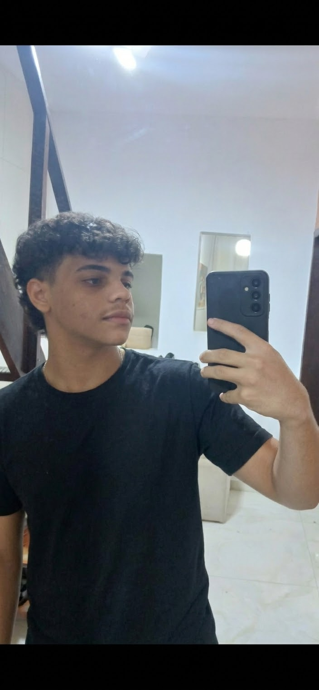

Olá! Prazer,
sou Pedro Lucas.
Sou estudante de Análise e Desenvolvimento de Sistemas, interessado no universo da tecnologia e no desenvolvimento de soluções que unam funcionalidade, criatividade e uma boa experiência para as pessoas.
Ao longo da minha formação, venho construindo uma base em lógica de programação, desenvolvimento de software e tecnologias web. Tenho dedicado atenção especial à linguagem Java, enquanto amplio meus conhecimentos em outras ferramentas e linguagens importantes para a área.
Considero cada desafio uma oportunidade de evolução. Busco aprender continuamente, aprimorar minha capacidade de resolver problemas e transformar o conhecimento adquirido em projetos práticos. Meu objetivo é crescer profissionalmente e contribuir com soluções úteis, bem estruturadas e acessíveis.
Vamos conversar ↗